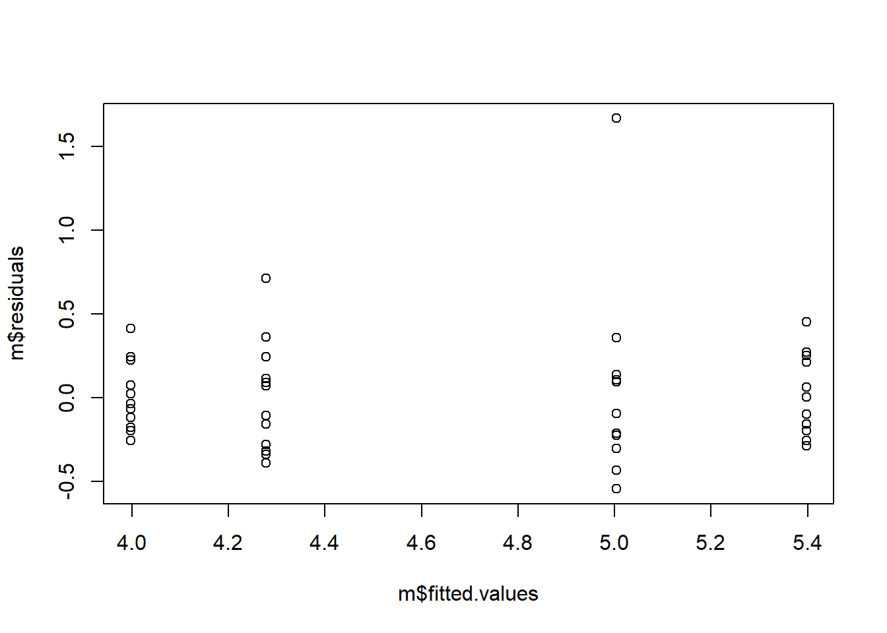
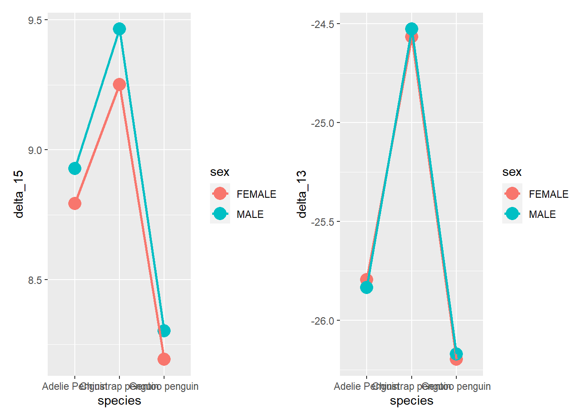
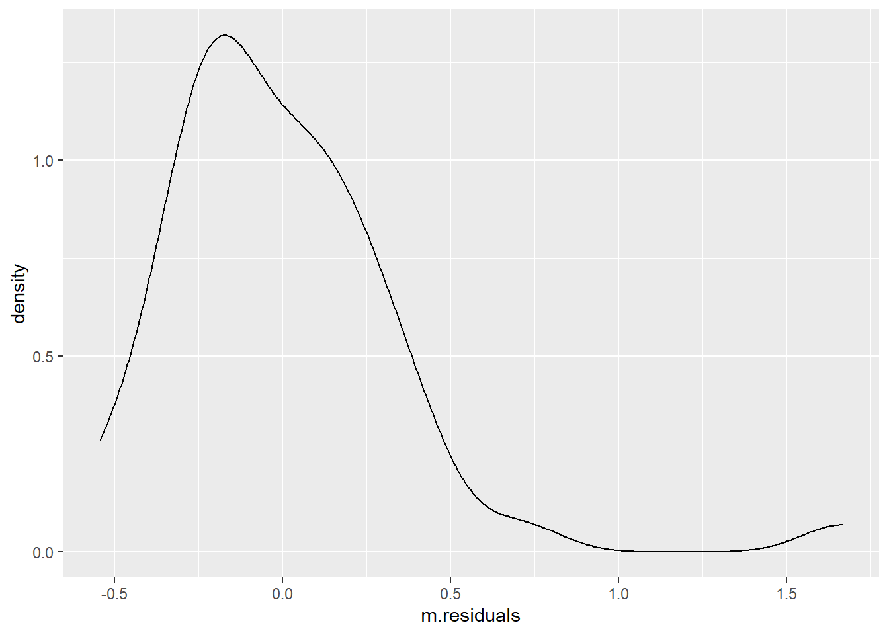

Chapter 7 Linear Regressions
So linear regression (LR) are a statistical method used to model a relationship between a dependent (outcome) variable and independent (predictors) variables by fitting a linear equation to the observed data. We can use it to study understand the relationship between these variables or predict future (yet unobserved) values.
The basic syntax for LR in R is as follows: lm(y ~ x, data = d). lm stands for linear model. y will be our outcome variable and x our predictor. You can interpret ~ here and in the following analysis as “predicted by”.
Lets look at a couple of examples. To do this we are going to load the data “Soils” from the carData package. This data concerns soil characteristics measured on samples. We will assume “pH” is our outcome/dependent variable.
d <- carData::Soils
m <- lm(pH ~ Depth, data = d)
m##
## Call:
## lm(formula = pH ~ Depth, data = d)
##
## Coefficients:
## (Intercept) Depth10-30 Depth30-60 Depth60-90
## 5.3975 -0.3933 -1.1192 -1.4000Now if you call the model you created (here labeled as “m”) it prints only a very small output with the coefficients of the equation only. You can get a more detailed view of everything using the command summary() or something more concise with anova() or car::Anova().
summary(m)##
## Call:
## lm(formula = pH ~ Depth, data = d)
##
## Residuals:
## Min 1Q Median 3Q Max
## -0.54417 -0.23250 -0.08083 0.15500 1.66583
##
## Coefficients:
## Estimate Std. Error t value Pr(>|t|)
## (Intercept) 5.3975 0.1089 49.585 < 2e-16 ***
## Depth10-30 -0.3933 0.1539 -2.555 0.0142 *
## Depth30-60 -1.1192 0.1539 -7.270 4.60e-09 ***
## Depth60-90 -1.4000 0.1539 -9.094 1.15e-11 ***
## ---
## Signif. codes: 0 '***' 0.001 '**' 0.01 '*' 0.05 '.' 0.1 ' ' 1
##
## Residual standard error: 0.3771 on 44 degrees of freedom
## Multiple R-squared: 0.7051, Adjusted R-squared: 0.685
## F-statistic: 35.07 on 3 and 44 DF, p-value: 9.811e-12anova(m)## Analysis of Variance Table
##
## Response: pH
## Df Sum Sq Mean Sq F value Pr(>F)
## Depth 3 14.9590 4.9863 35.068 9.811e-12 ***
## Residuals 44 6.2563 0.1422
## ---
## Signif. codes: 0 '***' 0.001 '**' 0.01 '*' 0.05 '.' 0.1 ' ' 1car::Anova(m)## Anova Table (Type II tests)
##
## Response: pH
## Sum Sq Df F value Pr(>F)
## Depth 14.9590 3 35.068 9.811e-12 ***
## Residuals 6.2563 44
## ---
## Signif. codes: 0 '***' 0.001 '**' 0.01 '*' 0.05 '.' 0.1 ' ' 1Now its not the focus of this book to explain all the content of the output. If you ever performed a similar analysis in SPSS then you should, by looking careful, finding everything you need.
Now, linear regression has a few assumptions that you probably would like to assure. These are:
1 - Linearity: The relationship between the independent and dependent variables is linear. 2 - Independence: The observations are independent of each other. 3 - Homoscedasticity: The variance of the errors is constant across all levels of the independent variable(s) 4 - Normality: The errors are normally distributed. 5 - Independence of errors: The errors are independent of the independent variable(s)
Again, these are beside the point of the guide, but if you want to check them, here is a quick way around a few of the most pertinent points.
# Homoscedasticity
plot(m$residuals ~ m$fitted.values)
## Or with ggplot
t <- data.frame(m$residuals, m$fitted.values)
t %>%
ggplot(aes(m.fitted.values, m.residuals)) +
geom_point()
# Normality
plot(density(m$residuals))
## Or with ggplot
t %>%
ggplot(aes(m.residuals)) +
geom_density()
With your model you can then make predictions, of course. To do this you use the command predict. Lets create a different model first with a continuous predictor
# New model
m <- lm(pH ~ Na, data = d)
# Creating a data frame with several predictor variables we wish to now the predictions too.
pd <- data.frame(Na = c(1, 3.5, 7, 8.2, 10))
# Predicting
predict(m, pd)## 1 2 3 4 5
## 5.320747 4.966709 4.471054 4.301116 4.046208Lastly, lets plot our model.
# Creating a dummy range of Na values.
na_values <- seq(range(d$Na)[1], range(d$Na)[2], 0.5)
plt_data <- data.frame(Na = na_values)
# Generating predictions with prediction confidence intervals
plt_data$predictions <- predict(m, plt_data, se.fit = TRUE, interval = 'prediction', level = .95)$fit[, 1]
plt_data$lwr <- predict(m, plt_data, se.fit = TRUE, interval = 'prediction', level = .95)$fit[, 2]
plt_data$upr <- predict(m, plt_data, se.fit = TRUE, interval = 'prediction', level = .95)$fit[, 3]
# Plotting
plt_data %>%
ggplot(aes(Na, predictions)) +
geom_point() +
geom_line(aes(group = 1)) +
geom_ribbon(aes(ymin = lwr, ymax = upr), alpha = 0.1) +
coord_cartesian(ylim = c(2, 8))
Linear regressions are one of the fundamental pillars of statistics. Nearly all statistical analyses are variations of linear regressions. I encourage you to truly understand them as it will give you more confidence when trying to perform any of the analyses shown below. Here are a few resources:
- https://www.spiceworks.com/tech/artificial-intelligence/articles/what-is-linear-regression/ (Just on linear regression)
- https://www.datacamp.com/tutorial/linear-regression-R
- https://www.tutorialspoint.com/r/r_linear_regression.htm
7.1 T-tests
T-tests, used two compare two samples, are also easily done with just base R. You have the following options:
One sample (for, as an example, a mean of 2)
t.test(y, mu = 2)Independent samples (samples not related to each other)
t.test(y ~ x)(Syntax wide)t.test(y1, y2)(Syntax long)Paired samples (samples related in some way to each other - e.g., from the same ID but different conditions)
t.test(y1, y2, paired=TRUE)
Lets proceed to some basic examples with the Soils data set from the carData package. This data set depicts soil characteristics that were measured on sample from three types of contours and four depths. The area was also divided into four blocks.
Needless to say the assumptions of the linear regression also hold for the t-tests and ANOVAs, so you should check them out first. But, for the purpose of demonstration, lets skip this and get to the point.
So one question, even if it doesn’t entirely makes sense (or at all), is if Density of the samples is different from 1.
d <- carData::Soils
t.test(d$Dens, mu = 1)##
## One Sample t-test
##
## data: d$Dens
## t = 9.9572, df = 47, p-value = 3.678e-13
## alternative hypothesis: true mean is not equal to 1
## 95 percent confidence interval:
## 1.252023 1.379644
## sample estimates:
## mean of x
## 1.315833Now, we may want to know if a Top contour is different from a Slope contour in terms of pH values.
For that we can use a independent-sample t-test. As I showed above, you can use two different syntaxes, with the result, of course, being exactly the same. The choice of syntax usually depends on how your data is structured. If in a long format (such as in this data set) we usually just use the second type of syntax (t.test(y1, y2)). If in a wide format we typically use the first syntax (y ~ x). Still, as long as you prepare your data, you can use whatever format you want.
# Syntax wide
t.test(d[d$Contour == 'Top', 'pH'], d[d$Contour == 'Slope', 'pH'])##
## Welch Two Sample t-test
##
## data: d[d$Contour == "Top", "pH"] and d[d$Contour == "Slope", "pH"]
## t = -0.67156, df = 27.412, p-value = 0.5075
## alternative hypothesis: true difference in means is not equal to 0
## 95 percent confidence interval:
## -0.7143742 0.3618742
## sample estimates:
## mean of x mean of y
## 4.57000 4.74625# Syntax long
d_test <- d[d$Contour %in% c('Top', 'Slope'),] # subsetting the data with these two types of contour
t.test(pH ~ Contour, data = d_test)##
## Welch Two Sample t-test
##
## data: pH by Contour
## t = 0.67156, df = 27.412, p-value = 0.5075
## alternative hypothesis: true difference in means between group Slope and group Top is not equal to 0
## 95 percent confidence interval:
## -0.3618742 0.7143742
## sample estimates:
## mean in group Slope mean in group Top
## 4.74625 4.57000Now all of these were examples of independent t-tests. To do a paired-samples (dependent) t-test you just have to use paired = TRUE within the function.
Now the data we used is not dependent/related in any manner. As such, lets use a different data set that features dependent/paired data. For this we will use the data set “ChickWeight” that is pre-installed in R. This data describes how time impact the weight gain by chickens considering different diets. Although the type of diet is not paired (only one diet is explored per chicken) the time intervals are measured per chick (each chicken is measured across several time intervals). We are going to work only with the first and second time measurements.
# Loading our data frame
d <- ChickWeight
# Messing up with the data so that we can work on a simple example
d <- d %>%
filter(Time == 0 | Time == 2) %>%
mutate(Time = ifelse(Time == 0, 'InitialEvaluation', 'FinalEvaluation'))
head(d)## Grouped Data: weight ~ Time | Chick
## weight Time Chick Diet
## 1 42 InitialEvaluation 1 1
## 2 51 FinalEvaluation 1 1
## 3 40 InitialEvaluation 2 1
## 4 49 FinalEvaluation 2 1
## 5 43 InitialEvaluation 3 1
## 6 39 FinalEvaluation 3 1t.test(weight ~ Time, data = d, paired = TRUE)##
## Paired t-test
##
## data: weight by Time
## t = 15.907, df = 49, p-value < 2.2e-16
## alternative hypothesis: true mean difference is not equal to 0
## 95 percent confidence interval:
## 7.129123 9.190877
## sample estimates:
## mean difference
## 8.167.2 Anovas
(Very) Simply put, ANOVAs are used to compare groups with more than two-levels. So previously in the t-test examples we only compared two-groups. Either 1 level against a mean value, or two levels between themselves.
Now, if we want to assess if the type of contour differs in their pH level we can simply perform an anova. There are definitely more ways to perform ANOVAs, but for sake of brevity, I’ll just leave with the aov() way.
# Loading our data frame
d <- carData::Soils
# Analysis
oneway_anova <- aov(pH ~ Contour, data = d)
summary(oneway_anova) # asks for the summary## Df Sum Sq Mean Sq F value Pr(>F)
## Contour 2 0.261 0.1303 0.28 0.757
## Residuals 45 20.955 0.4657Once more, we performed a one-way (Just 1 factor, which in this case is Contour) independent sample anova. To perform two-way or even more, we could just add more factors such as aov(y ~ factor1 + factor2, data = d). Let me exemplify below so I can also you show how you test for interaction between factors in a two-way ANOVA.
twoway_anova <- aov(pH ~ Contour*Block, data = d)
summary(twoway_anova)## Df Sum Sq Mean Sq F value Pr(>F)
## Contour 2 0.261 0.1303 0.274 0.762
## Block 3 1.232 0.4108 0.862 0.470
## Contour:Block 6 2.568 0.4280 0.898 0.507
## Residuals 36 17.154 0.4765The * between the two factors, signifies “interaction”.
Lastly, you may want to perform a paired samples ANOVA. In this case you can’t simply say paired = TRUE. Here you need a different function. I’m going to introduce you two new ways to perform a repeated-measures (or independent) ANOVA.
library(rstatix) # for anova_test()##
## Attaching package: 'rstatix'## The following object is masked from 'package:stats':
##
## filterlibrary(ez) # for the ezANOVA()
rep.anova1 <- anova_test(data = d, dv = pH, wid = Group, within = Block)
rep.anova1## ANOVA Table (type III tests)
##
## $ANOVA
## Effect DFn DFd F p p<.05 ges
## 1 Block 3 33 3.192 0.036 * 0.058
##
## $`Mauchly's Test for Sphericity`
## Effect W p p<.05
## 1 Block 0.069 9.95e-05 *
##
## $`Sphericity Corrections`
## Effect GGe DF[GG] p[GG] p[GG]<.05 HFe DF[HF] p[HF] p[HF]<.05
## 1 Block 0.417 1.25, 13.78 0.089 0.446 1.34, 14.7 0.086# Or
rep.anova2 <- ezANOVA(data = d, dv = pH, wid = Group, within = Block)
rep.anova2## $ANOVA
## Effect DFn DFd F p p<.05 ges
## 2 Block 3 33 3.191956 0.0362248 * 0.05809364
##
## $`Mauchly's Test for Sphericity`
## Effect W p p<.05
## 2 Block 0.0690423 9.949466e-05 *
##
## $`Sphericity Corrections`
## Effect GGe p[GG] p[GG]<.05 HFe p[HF] p[HF]<.05
## 2 Block 0.4174896 0.08941906 0.4455701 0.085629937.2.1 Post-hocs
Lastly, I would like to briefly introduce a way for you to perform post-hocs. Post-hoc tests are the follow-up on ANOVAs where you investigate which exact groups present a difference. So say for instance that our previous twoway_anova tells us that the type of Contour shows a statistically significant change over pH (I know it doesn’t, so just pretend). Now, you may want to know which contour do exactly differ between themselves in terms of pH values.
For that we will use the emmeans package and base functions such as pairs()and contrast(). There are many other ways to obtain post-hocs, some may be simpler but more specific, but, as an example, I’ll demonstrate one of the most versatile (i.e., emmeans). This allows you to do post-hoc test for many types of linear, generalized linear models and mixed models. Given its vast applicability, it sometimes may be a bit confusing in how to extract the post-hoc tests for your model the way you want. For that you can consult its help vignette here:
https://cran.r-project.org/web/packages/emmeans/vignettes/basics.html#contents
This function
library(emmeans) # stands for estimated marginal means##
## Attaching package: 'emmeans'## The following object is masked from 'package:GGally':
##
## pigssummary(twoway_anova)## Df Sum Sq Mean Sq F value Pr(>F)
## Contour 2 0.261 0.1303 0.274 0.762
## Block 3 1.232 0.4108 0.862 0.470
## Contour:Block 6 2.568 0.4280 0.898 0.507
## Residuals 36 17.154 0.4765emm <- emmeans(object = twoway_anova,
specs = ~ Contour*Block,
by = 'Contour',
type = 'response',
adjust = 'bonferroni')
pairs(emm)## Contour = Depression:
## contrast estimate SE df t.ratio p.value
## Block1 - Block2 -0.3525 0.488 36 -0.722 0.8876
## Block1 - Block3 -0.3000 0.488 36 -0.615 0.9268
## Block1 - Block4 -0.6550 0.488 36 -1.342 0.5431
## Block2 - Block3 0.0525 0.488 36 0.108 0.9995
## Block2 - Block4 -0.3025 0.488 36 -0.620 0.9251
## Block3 - Block4 -0.3550 0.488 36 -0.727 0.8855
##
## Contour = Slope:
## contrast estimate SE df t.ratio p.value
## Block1 - Block2 -0.2725 0.488 36 -0.558 0.9437
## Block1 - Block3 -0.2500 0.488 36 -0.512 0.9557
## Block1 - Block4 -1.0225 0.488 36 -2.095 0.1742
## Block2 - Block3 0.0225 0.488 36 0.046 1.0000
## Block2 - Block4 -0.7500 0.488 36 -1.537 0.4270
## Block3 - Block4 -0.7725 0.488 36 -1.583 0.4010
##
## Contour = Top:
## contrast estimate SE df t.ratio p.value
## Block1 - Block2 -0.1050 0.488 36 -0.215 0.9964
## Block1 - Block3 0.2250 0.488 36 0.461 0.9670
## Block1 - Block4 0.3900 0.488 36 0.799 0.8544
## Block2 - Block3 0.3300 0.488 36 0.676 0.9055
## Block2 - Block4 0.4950 0.488 36 1.014 0.7423
## Block3 - Block4 0.1650 0.488 36 0.338 0.9865
##
## P value adjustment: tukey method for comparing a family of 4 estimatescontrast(emm)## Contour = Depression:
## contrast estimate SE df t.ratio p.value
## Block1 effect -0.3269 0.299 36 -1.094 0.5628
## Block2 effect 0.0256 0.299 36 0.086 0.9322
## Block3 effect -0.0269 0.299 36 -0.090 0.9322
## Block4 effect 0.3281 0.299 36 1.098 0.5628
##
## Contour = Slope:
## contrast estimate SE df t.ratio p.value
## Block1 effect -0.3862 0.299 36 -1.292 0.4090
## Block2 effect -0.1138 0.299 36 -0.381 0.7058
## Block3 effect -0.1363 0.299 36 -0.456 0.7058
## Block4 effect 0.6362 0.299 36 2.129 0.1608
##
## Contour = Top:
## contrast estimate SE df t.ratio p.value
## Block1 effect 0.1275 0.299 36 0.427 0.7462
## Block2 effect 0.2325 0.299 36 0.778 0.7462
## Block3 effect -0.0975 0.299 36 -0.326 0.7462
## Block4 effect -0.2625 0.299 36 -0.878 0.7462
##
## P value adjustment: fdr method for 4 testsYou can change your by parameters to adjust what comparisons you want in the pairs and contrast functions. I recommend you manipulate this to really understand its inner workings.
As for the difference between the two functions (i.e., pairs and contrasts):
- pairs -> Performs all pairwise comparisons
- contrast -> Used to test specific comparisons/hypotheses
If they are pairwise comparisons you should instead say (in this example) pairwise ~ Contour * Block.